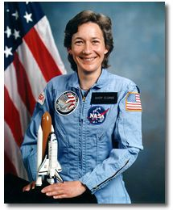

Lyndon B. Johnson Space Center
Houston, Texas 77058
|
National Aeronautics and Space Administration Lyndon B. Johnson Space Center Houston, Texas 77058 |
Biographical Data |
|

MARY L. CLEAVE (PH.D., P.E.)
NASA ASTRONAUT (FORMER)
PERSONAL DATA: Born February 5, 1947, in Southampton, New York. Her father, Dr. Howard E. Cleave, resides in Williamstown, Massachusetts. Her mother is deceased.
EDUCATION: Graduated from Great Neck North High School, Great Neck, New York, in 1965; received a bachelor of science degree in Biological Sciences from Colorado State University in 1969 and master of science in Microbial Ecology and a doctorate in Civil and Environmental Engineering from Utah State University in 1975 and 1979, respectively.
ORGANIZATIONS: Member of the Society for Professional Engineers, the Association of Space Explorers, Women in Aerospace, Tri-Beta, Sigma XI, and Tau Beta Pi.
EXPERIENCE: Dr. Cleave held graduate research, research phycologist, and research engineer assignments in the Ecology Center and the Utah Water Research Laboratory at Utah State University from September 1971 to June 1980. Her work included research on the productivity of the algal component of cold desert soil crusts in the Great Basin Desert south of Snowville, Utah; algal removal with intermittent sand filtration and prediction of minimum river flow necessary to maintain certain game fish; the effects of increased salinity and oil shale leachates on freshwater phytoplankton productivity; development of the Surface Impoundment Assessment document and computer program (FORTRAN) for current and future processing of data from surface impoundments in Utah; and design and implementation of an algal bioassay center and a workshop for bioassay techniques for the Intermountain West.
NASA EXPERIENCE: Dr. Cleave was selected as an astronaut in May 1980. Her technical assignments have included: flight software verification in the Shuttle Avionics Integration Laboratory (SAIL); CAPCOM on five Space Shuttle flights; Malfunctions Procedures Book; Crew Equipment Design. A veteran of two space flights, Dr. Cleave has logged a total of 10 days, 22 hours, 02 minutes, 24 seconds in space, orbited the earth 172 times and traveled 3.94 million miles. She was a mission specialist on STS 61-B (November 26 to December 3, 1985) and STS-30 (May 4-8, 1989). Dr. Cleave left JSC in May 1991 to join NASA's Goddard Space Flight Center in Greenbelt, Maryland. She worked in the Laboratory for Hydrospheric Processes as the Project Manager for SeaWiFS (Sea-viewing, Wide-Field-of-view-Sensor), an ocean color sensor which is monitoring vegetation globally. Dr. Cleave next served as Deputy Associate Administrator (Advanced Planning), Office of Earth Science, NASA Headquarters, Washington, D.C. Dr. Cleave retired from NASA in February 2007.
SPACE FLIGHT EXPERIENCE: STS-61B Atlantis (Nov. 26 to Dec. 3, 1985) launched at night from the Kennedy Space Center, Florida, and returned to land on Runway 22 at Edwards Air Force Base, California. During the mission, the crew deployed the MORELOS-B, AUSSAT II, and SATCOM K-2 communications satellites, conducted 2 six-hour spacewalks to demonstrate space station construction techniques with the EASE/ACCESS experiments, operated the Continuous Flow Electrophoresis (CFES) experiment for McDonnell Douglas and a Getaway Special (GAS) container for Telesat, Canada, conducted several Mexican Payload Specialist Experiments for the Mexican Government, and tested the Orbiter Experiments Digital Autopilot (OEX DAP). This was the heaviest payload weight carried to orbit by the Space Shuttle to date. Mission duration was 165 hours, 4 minutes, 49 seconds.
STS-30 Atlantis (May 4-8, 1989) was a four day mission during which the crew successfully deployed the Magellan Venus-exploration spacecraft, the first U.S. planetary science mission launched since 1978, and the first planetary probe to be deployed from the Shuttle. Magellan arrived at Venus in August 1990 and mapped over 95% of the surface of Venus. Magellan has been one of NASA’s most successful scientific missions providing valuable information about the Venetian atmosphere and magnetic field. In addition, the crew also worked on secondary payloads involving Indium crystal growth, electrical storm, and earth observation studies. Mission duration was 96 hours, 57 minutes, 35 seconds.
FEBRUARY 2007
This is the only version available from NASA. Updates must be sought direct from the above named individual.